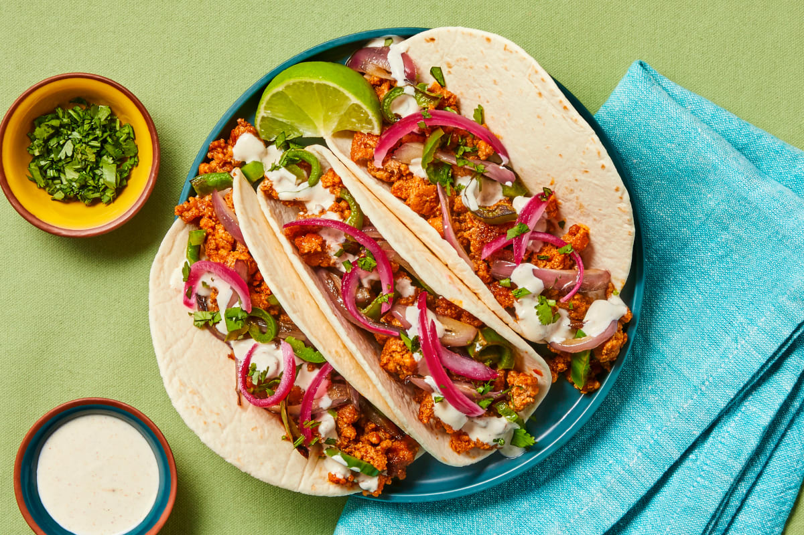

Citrus Pork Tacos

Description
An all-star recipe full of citrus flavor! These pork tacos are topped with pickled red onions, southwest crema, and and cilantro (who doesn't love cilantro!)
Materials
- 2 Small bowls
- Plastic wrap
- Large pan
- Medium bowl
- Paper towels
- Kosher salt
- Black pepper
- Sugar (1/4 tsp)
- Cooking oil (2 tsp)
Ingredients
**Indiviidual portion sizing
- 5 oz Ground Pork
- 3 Flour Tortillas
- 1/2 Orange
- 1 Small Yellow Onion
- 1 Lime
- 1 Long Green Pepper
- 1/4 oz Cilantro
- 4 tbsp Sour Cream
- 2 oz Tex-Mex Paste
- 1 tbsp Southwest Spice Blend
Steps
- PREP
- MAKE PICKLES & CREMA
- In a small, microwave-safe bowl, combine 1/4 of the onion, juice from half of the lime, 1/8 tsp sugar, and a pinch of salt. Cover with plastic wrap and microwave for 30 seconds. Set aside.
- In a separate small bowl, combine sour cream with 1/4 tsp Southwest Spice. (You'll use the remaining Southwest Spice later) Season with salt and pepper. Stir in water 1 tsp at a time until mixture reaches a drizzling consistency.
- COOK VEGGIES
- Heat a drizzle of oil in a large pan over medium-high heat. Add green pepper and remaining onion; cook, stirring occasionally, until browned and tender, 5-7 minutes. Season with salt and pepper.
- Turn off Heat; transfer to a medium bowl. Wipe pan out.
- COOK PORK
- Heat a drizzle of oil in a pan used for veggies over medium-high heat. Add pork and remaining Southwest Spice. Cook, breaking up meat into pieces, until browned. 3-4 minutes. TIP: If there's excess grease in your pan, carefully pour it out.
- Stir in Tex-Mex paste, juice from orange, and a squeeze of lime juice. Bring to a simmer and cook until pork is cooked through and sauce has thickened. 2-3 minutes more. Taste and season with salt and pepper.
- WARM TORTILLAS
- While pork cooks, wrap tortillas in damp paper towels and microwave until warm and pliable. 30 seconds.
- SERVE
- Plate tortillas and fill with pork filling and veggies. Drizzle with crema and top with pickled onion (draining first) and cilantro. Serve with remaining lime wedges on the side.
Enjoy!
Home